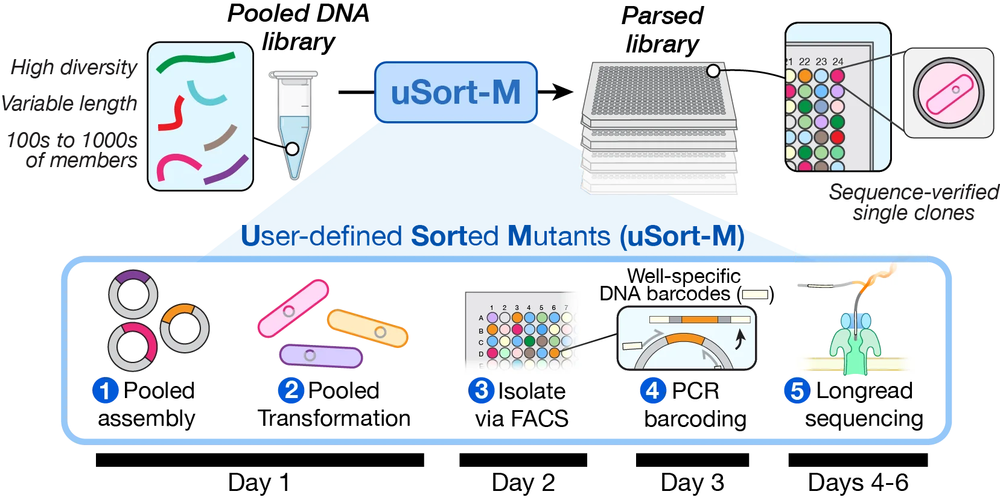

uSort-M
Rapid and low-cost parsed variant library generation
uSort-M converts pooled DNA libraries into collections of isolated and verified sequences. uSort-M achieves significant (often >10x) cost savings compared to traditional gene synthesis. For most libraries, the time required to clone, sort, barcode, and sequence-verify thousands of sequences is often less than 10 days.

From a pooled DNA library, uSort-M uses multiplex assembly (e.g., Golden Gate or Gibson) to generate a plasmid library for transformation into E. coli. Single cells are isolated via FACS, barcoded by well-specific PCR, sequenced, and cherry-picked into a final arrayed library.
What will it cost?
My gene is bp in length and I want to parse variants.
uSort-M: 0-300 bp uses IDT oPools or Twist Oligo Pools; >300 bp uses 30 bp substitution library cloned into full-length gene.
Traditional: Direct gene fragment synthesis (Twist Gene Fragments, IDT eBlocks).
Quick Start
# Install uSort-M
git clone https://github.com/FordyceLab/usortm.git
cd usortm
pip install -e ".[all]"
# Quick cost estimate
usortm estimate --library-size 500 --seq-length 300
# Plan a full experiment
usortm plan variants.csv --output my_project/See the Getting Started guide for detailed installation and usage instructions.
Citation
If you use uSort-M in your research, please cite:
Olivas MB, Almhjell PJ, Shanahan JD, Fordyce PM. uSort-M: Scalable isolation of user-defined sequences from diverse pooled libraries. bioRxiv (2026).